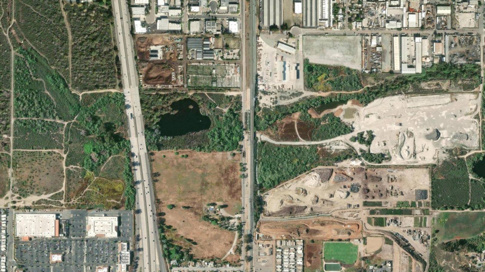

Bella Mar Land Investors LLC

Sources: 75% membership: Examiner's Supplemental Report, Doc 362, Pg. 122 (tax-return table); California Secretary of State filings list managers, not members or percentages. 14.62 ac: PC-25-032 staff report, https://www.sandiego.gov/sites/default/files/2025-08/pc-25-032-bella-mar-staff-report_1.pdf, and Tentative Parcel Map No. 2361780, Attachment 8, PDF p. 81, https://www.sandiego.gov/sites/default/files/2025-08/pc-25-032-bella-mar-report-attachments-1-8.pdf (the assessor reports 14.13 ac). Owner of record: PC-25-032 staff report; Doc 362, Pg. 13, Exh. M. 380 units, 437 spaces, 26 du/ac: Sheet T.2 (Attachment 8, PDF p. 80) and staff report pp. 6–9.
Net present value of building the approved project, land at $19.0M
—
—
NPV = PV of exit value + PV of Years 1–5 NOI − all-in cost (sourced and ESTIMATE rows + land), with the approval-record adjustments. Recalculates live from the inputs below. All-in: —. Residual land value (what the land can bear at NPV = 0): —.
This is a valuation analysis by Michael Corkery, CFA. It is not a licensed appraisal, not an appraisal report under USPAP, not a contractor bid, and not legal advice. Michael is not a licensed appraiser.
Valuation Approach: The Lender's View Sets Market Value
In Michael's analysis, the market value of a development site such as 408 Hollister is ultimately set by the bank's underwriting. A construction lender funds most of any transaction; in Michael's experience the borrower contributes only about 20–30% equity. Without the loan the project cannot proceed, however sound the plan or the equity looks on paper. The lender's test is simple: will the completed project earn enough to be worth more than it costs to build? This page applies that test directly. The NPV above compares the present value of the stabilized project with its all-in cost, and the residual land value shows the most a buyer could pay for the land and still break even. It is Michael's position that the Lennar arrangement put essentially no money down, sat idle for years, and may no longer make fiscal sense as planned roughly eight years ago. A valuation that ignores the lender's test is not a true market valuation.
Builders walk away when the cash flow fails. Lennar's FY2025 Form 10-K reports $23.1 million of deposit write-offs as it walked away from 15,500 controlled homesites in fiscal 2025 [38]; against 82,583 home deliveries that year (Item 1), that is about 18.8% (derived), at roughly $1,500 per homesite (derived). Lennar routinely walks away from deals even after deposits are paid: it “evaluates the option primarily based upon its expected cash flows from the property under option,” abandons the option when the numbers do not work, and “in substantially all instances” faces no further penalty beyond the deposit, pre-acquisition costs and any termination fee [38]. That $23.1 million is deposit money Lennar had already put at risk and forfeited when it walked. Bella Mar never reached that stage: under the examiner's description, Lennar's first $50,000 deposit was due only after a signed purchase agreement, and in the record reviewed no purchase agreement was executed, no deposit was paid, and due diligence was still being extended, most recently to April 15, 2026 [39] [40].
Supporting authority. No controlling case was located. [Placeholder — no case law is cited here; authority will be added only if a controlling case is found and verified.]
Executive summary
- NPV. On the sourced basis, with $19M land, a 5% exit cap, an 8% discount rate and 3% growth, NPV is — (all-in —). The figure excludes the rows still flagged NEEDS INPUT, so true cost is higher and true NPV lower.
- Density mismatch near the trolley (Michael's analysis). The site is about 0.21–0.39 mi from the Palm Avenue trolley station [41]. RM-2-5 zoning sets a maximum (1 du per 1,500 sf; 425 units) [11]. The approved plan is 26 du/ac, inside the community plan range (15–<30 du/ac) [42] [1]. SANDAG's 20 du/ac is a minimum target density for its Town Center place type [43] — a planning target, not a binding code minimum, and the 2016 report places that Town Center south of or up to Palm Avenue. In Michael's view, a single-family house plan would fall well below the density the City and SANDAG plan for around the station, and rezoning or re-approving a just-approved project only to downsize it makes it unlikely a national builder would follow through once it did its diligence.
- Flood and fill. “The entire site is located within the 100-year floodplain” (Zone AE) [44]. Finished floors must sit at least 2 ft above base flood elevation, so the plans import 78,200 CY of fill on site plus 3,150 CY off site, with 56,860 CY of remedial grading [5] (rows A2–A5). In Michael's view, a national builder's head office would likely send a deal with this fill burden back to the local division that signed the letter of intent.
- Approval record (conditions, plans, CEQAnet studies). The record adds required scope the earlier draft did not carry: the Hollister frontage package (6 ft dedication, 16 ft widening, ~790 LF of sidewalk and parkway, 695 LF temporary sidewalk, two bus stops, a beacon crossing, concrete path, 18" storm drain, 10" sewer, streetlights, undergrounding), liquefaction and groundwater work, flood-rated walls and fill standards, a LOMR, an 11,220 sf biofiltration basin with perpetual maintenance, noise and fire upgrades, full-time cultural monitoring and a schedule constrained by the bird season and a 90–120-day settlement wait. Rows priced from County unit prices are ESTIMATES in the headline; the rest are NEEDS INPUT at $0 with labelled assumption ranges in the Monte Carlo. See the Before / After table.
- Cost. Sourced construction total (excluding land): —, from — sourced lines; — lines are flagged NEEDS INPUT and carried at $0.
Property, entitlement and zoning
- Property
- 408 Hollister St, San Diego 92154 (Palm City / Otay Mesa-Nestor)
- APN 627-100-09-00.
- 401 Hollister is not a distinct assessor situs or parcel.
Sources: San Diego County Assessor/Recorder/County Clerk, https://arcc.sdcounty.ca.gov/ (look up by APN); PC-25-032 staff report, https://www.sandiego.gov/sites/default/files/2025-08/pc-25-032-bella-mar-staff-report_1.pdf.
- Entitlement
- 380 apartments (280 market-rate in 14 three-story buildings + 100 affordable in one four-story building, plus a 4,350 sf clubhouse).
- Rezone to RM-2-5
- City Council / plan actions 8/4/2023
- CCC LCP certified 12/12/2024
- Planning Commission 8/14/2025
- City-issued CDP 1/23/2026 (public record).
- Building gross 478,005 sf
- leasable 364,635 sf
- FAR 0.75.
Sources: PC-25-032 staff report, https://www.sandiego.gov/sites/default/files/2025-08/pc-25-032-bella-mar-staff-report_1.pdf; Sheet T.2, Attachment 8, PDF p. 80, https://www.sandiego.gov/sites/default/files/2025-08/pc-25-032-bella-mar-report-attachments-1-8.pdf; Planning Commission minutes, Aug 14, 2025, p. 4, https://www.sandiego.gov/sites/default/files/2025-08/pc-min-08-14-25-approved.pdf; California Coastal Commission Th18 certification review, Dec 12, 2024, https://documents.coastal.ca.gov/reports/2024/12/Th18/Th18-12-2024-report.pdf; City of San Diego 2026 issued-approvals open data, https://seshat.datasd.org/development_permits/approvals_issued_2026_datasd.csv.
- Zoning / density
- RM-2-5 (maximum 1 du / 1,500 sf; staff cap 424 units).
- Community plan: Medium Density Residential, 15–<30 du/net acre (staff: 219–424 units).
- Proposed 26 du/ac.
- No density bonus used.
- No binding 20 du/ac construction minimum was found for this parcel.
Sources: PC-25-032 staff report p. 7, https://www.sandiego.gov/sites/default/files/2025-08/pc-25-032-bella-mar-staff-report_1.pdf; Otay Mesa-Nestor Community Plan (amended Dec 2024), https://www.sandiego.gov/sites/default/files/2025-01/adopted-omn-cp-cpa-december-2024.pdf; Palm Avenue Revitalization Plan Technical Report (Mar 2016), PDF p. 28 (SANDAG 20 du/ac minimum residential target density), https://www.sandiego.gov/sites/default/files/final_palm_avenue_technical_report.pdf.
- Site conditions
- Entire site in the 100-year flood fringe (Zone AE); finished floors must be 2 ft or more above BFE. 78,200 CY on-site import + 3,150 CY off-site import; 56,860 CY remedial grading. About 2.3 acres remain in a 100-ft biological buffer. High liquefaction potential cited from a 2019 GEOCON report that is not in the public PC posting.
Sources: California Coastal Commission staff report W13b (July 2024), PDF p. 40, https://documents.coastal.ca.gov/reports/2024/7/w13b/w13b-7-2024-report.pdf; Tentative Parcel Map No. 2361780, Attachment 8, PDF p. 81, https://www.sandiego.gov/sites/default/files/2025-08/pc-25-032-bella-mar-report-attachments-1-8.pdf; PC-25-032 staff report, https://www.sandiego.gov/sites/default/files/2025-08/pc-25-032-bella-mar-staff-report_1.pdf; Final MND No. 631240, https://www.sandiego.gov/sites/default/files/dsd_final_mitigated_negative_declaration_11.pdf.
- Debt / liens
- Home Bank loan assigned to The Hollister Group LLC (7/7/2025); notice of default recorded 7/28/2025.
Sources: Examiner's Supplemental Report, Doc 362, Pg. 13; Exh. Q.
- Debtor vs. Examiner
- Doc 62 equity · Doc 435 equity · Sched. A/B · Examiner Doc 362: “Unable to determine”
Sources: Bankruptcy court filings, Docs 62, 435 and 362; Schedule A/B.
Ownership
Jeffrey D. Phair personally owns 75 percent of Bella Mar Land Investors LLC. The Pressley Family Trust owns 25 percent. Bella Mar Land Investors LLC is the owner of record of 408 Hollister Street, San Diego, APN 627-100-09-00, 14.62 acres, and title remains in that company. Jeffrey D. Phair also holds a 50 percent interest in RTA Phair/Hollister, LLC, an entity formed to build out the Bella Mar project. The examiner reports that entity has never conducted business.
Members
Personally
Jeffrey D. Phair
75%
75%
Pressley Family Trust
25%
25%
Bella Mar Land Investors LLC
100%
Property
Title
Title remains in Bella Mar Land Investors LLC
Owner of record
408 Hollister St, San Diego
Related entity
Sources: 75% / 25% membership (Jeffrey D. Phair personally / Pressley Family Trust): Examiner's Report, Doc 282, Exh. J, Pg. 71 (tax-return table) [49]; repeated in Examiner's Supplemental Report, Doc 362, Pg. 122 (tax-return table) [51]. California Secretary of State filings list managers, not members or percentages. Entity: California Secretary of State document 201606710273, formed March 1, 2016, status Active, https://bizfileonline.sos.ca.gov/search/business. Property, APN and 14.62 ac: PC-25-032 staff report and Tentative Parcel Map No. 2361780, Attachment 8, PDF p. 81 [1] [5]. Owner of record / title remains in Bella Mar Land Investors LLC: Examiner's Report, Doc 282, Pg. 13 (examiner narrative) [50]; Examiner's Supplemental Report, Doc 362, Pg. 13 (examiner narrative) [51]; PC-25-032 staff report [1]. Jeffrey D. Phair's 50% interest in RTA Phair/Hollister, LLC: Doc 282, Pg. 9 (holdings table) and Pg. 14 (examiner narrative) [50]; Doc 362, Pg. 14 (examiner narrative) [51]. Entity formed to build out Bella Mar and has never conducted business: Doc 282, Pg. 14 (examiner narrative) [50]; Doc 362, Pg. 15 (examiner narrative) [51].
NPV formula — Estimate and Actual
| Step | Formula | Call inputs (Michael, Nov 16) | Estimate (this page, live) | Actual |
|---|
Year-1 NOI is from the Nov 16 internal engine rerun (EGI $12,199,951 − opex $2,503,975 − tax $1,838,768), not a public source. Selling cost 5% is a model assumption. The headline keeps the delay at 0 months (stabilization in Year 1), which flatters value; enter months above to test it. The Monte Carlo draws it (see below). Actual is left blank until verified figures exist.
NOI adjustments from the approval record
| # | Item | Annual $ (deducted) | Actual | Derivation | Source | Status |
|---|
Affordable terms by condition (A5 c.6; A6 c.14): 38 units (10%) deed-restricted at rents ≤30% of 60% AMI for at least 55 years, under an SDHC agreement secured by a deed of trust before the parcel map or building permits. The other 62 affordable units (28 @ 80%, 22 @ 60%, 11 @ 30% AMI, 1 manager; SR p. 7) are proposed, not separately deed-restricted by condition; the model keeps all 100 as affordable.
Reconciling the $207.5M and $271M all-in figures
| All-in ($19M land) | Basis | NPV, exit only (8%) | NPV incl. PV of NOI (8%) |
|---|---|---|---|
| $207,538,219 | Internal engine; $316.50/sf × 338,375 NRSF; 812 surface stalls (earlier run; the figure quoted on the call) | −$93,184,049 | −$60,023,872 |
| $203,793,788 | Same NRSF basis, parking corrected to the plans' 437 stalls | −$89,439,618 | −$56,279,441 |
| $270,945,905 | Internal engine; $316.50/sf × 478,005 GFA; 437 stalls (Nov 16 rerun, primary) | −$156,591,735 | −$123,431,558 |
| — | This page: sourced rows only (CTCAC $260/sf × CCCI on GFA, County unit prices, fee schedules, CTCAC soft/financing ratios) + land | — | — |
The $207.5M figure and the $271M figure come from the same engine on two different bases. $207.5M prices construction on net rentable area (338,375 sf, the sum of unit sizes) and used an earlier 812-stall parking count; correcting parking to 437 gives $203.8M. $271M prices the same $316.50/sf on gross floor area (478,005 sf, which includes circulation, garages and common space). The $67.2M gap between $203.8M and $270.9M is vertical cost +$44.2M, the engine's 17.18% “other hard” +$7.6M, percentage-based soft costs +$6.5M, and interest +$8.9M. Industry $/sf benchmarks are normally quoted per gross square foot, so GFA is the conventional basis; this page uses GFA with a lower, locally sourced $/sf and itemized fees instead of the engine's percentage loads.
Line-by-line cost build-up
Formula on every quantity row: Quantity × Unit cost × Index factor = Estimate. Percentage rows: % × (A + B hard cost). Blue cells are editable. Rows marked UNSOURCED — NEEDS INPUT are shown but excluded from the sourced total; enter a value to see it in “Total incl. user inputs”. Source numbers refer to the list at the bottom; every source was opened on Nov 16, 2026.
Index factors (CCCI [7]): County list ; CTCAC ; HMP ; RSMeans . The CCCI is a statewide index built from San Francisco and Los Angeles; no public San Diego construction index was found.
| # | Line item | Quantity | Unit | Unit cost / % | Index | Estimate | Actual | Derivation | Source | Status |
|---|
Citywide DIF detail (row C3)
| Units | Unit sf | FY27 band (sf) | Park | Fire | Library | Mobility | Per unit | Total |
|---|---|---|---|---|---|---|---|---|
| 85 | 647 | 601–650 | $12,544 | $766 | $1,945 | $3,759 | $19,014 | $1,616,190 |
| 129 | 1,000 | 951–1,000 | $15,438 | $943 | $2,394 | $4,627 | $23,402 | $3,018,858 |
| 66 | 1,253 | 1,251–1,300 | $17,988 | $1,099 | $2,791 | $5,391 | $27,269 | $1,799,754 |
| 48 | 572 | 551–600 | $11,992 | $732 | $1,860 | $3,594 | $18,178 | $872,544 |
| 26 | 738 | 701–750 | $13,302 | $813 | $2,064 | $3,987 | $20,166 | $524,316 |
| 26 | 963 | 951–1,000 | $15,438 | $943 | $2,394 | $4,627 | $23,402 | $608,452 |
| Total Citywide DIF (row C3) | $8,440,114 | |||||||
Unit counts and sizes: staff report p. 7 [1]. Rates: FY 2027 Multi-Family table [25]. The “Fire (Underserved)” column is not applied; whether the site is in an underserved fire area was not verified.
Materials inside the vertical cost (memo — not added)
| Material (inside B1–B2 and A-rows — not added again) | Unit | National, 2025 Q4 | × SD 1.13 × CCCI | Quantity |
|---|---|---|---|---|
| Concrete, ready mix, 3000 psi (cement is inside this price) | CY | $192.64 | Contractor takeoff needed | |
| Reinforcing steel, Grade 60, #5 bars | cwt | $94.17 | Contractor takeoff needed | |
| Framing lumber, 2x4, kiln-dried | MBF | $870.40 | Contractor takeoff needed | |
| Plywood sheathing, CDX 1/2" | sf | $0.74 | Contractor takeoff needed | |
| Gypsum wallboard 1/2" | sf | $0.44 | Contractor takeoff needed | |
| Masonry cement, Type N, 70 lb bag | bag | $16.47 | Contractor takeoff needed | |
| Hot-mix asphalt, loaded at plant | ton | $88.20 | Contractor takeoff needed | |
| Crushed stone 3/4" minus, at pit | CY | $42.02 | Contractor takeoff needed | |
| Borrow, bank-run gravel, at pit | CY | $19.82 | Contractor takeoff needed |
National prices: RSMeans Key Materials 2025 Q4 [45]. Regional adjustment: RSMeans 2023 San Diego location factor 1.13 (BAE Table 7) [22], a whole-building factor applied here to materials only as an approximation, then CCCI Oct 2025→Oct 2026 [7]. These rows show what the vertical $/sf already contains. They are excluded from every total so that nothing is counted twice; a contractor's quantity takeoff would replace B1–B2 with these rows.
Vertical $/sf cross-check
| Benchmark | $/sf | Notes | Source |
|---|---|---|---|
| CTCAC Otay Ranch II (Chula Vista, 4-story, 270 units), × CCCI → Oct 2026 — used | $260 → $272.95 | Public filing; includes on-site work; gross/net basis not labeled | [20] [7] |
| RLB Los Angeles multifamily, × RSMeans SD/LA (1.13/1.14) | $275–$450 → $272.59–$446.05 | Hard cost per GSF; excludes site works | [21] [22] |
| Cumming Southwest “Market Grade Apartment” (Q1 2025) | $300 / $450 / $660 | Regional; excludes sitework and soft costs | [15] |
| Gordian/RSMeans San Diego, 4–7 story apartments (Q3 2026) | $316.50 | Planning model; secondary transcription of the BD+C table; used by the internal engine | [46] [37] |
Cost lines required by the technical studies and conditions of approval
Schedule only — draft. This table lists every cost the CEQAnet technical studies (SCH 2022040642) and the PC-25-032 conditions of approval require, one line each, with its source report. It does not change the valuation: the NPV, residual land value, all-in cost, Monte Carlo and every model input above are unchanged. Rows marked “In model headline” are already in the build-up; “Added” rows are $0 in the headline today (most carry a Monte Carlo range). Low/high figures are direct costs in Oct 2026 dollars before the page’s 29.66% soft/financing/contingency load. Most are derived planning ballparks, not bids: a sourced unit price times a record quantity or a stated assumption. Nothing here is a quote.
No double counting. The drainage-study detention basin and the SWQMP BF-1 biofiltration basin are one facility (S1). S2 replaces draft A17m (pipe only). A17e parkway planting overlaps S3 green-street treatment and is excluded. The five-year habitat monitoring is inside A16. Rows C13a–e are parts of C13, and only C13 counts. The wall rows (WALL-N, WALL-H) come from the Nov 16 retaining-wall memo and replace draft A15 ($167,989–$587,962) on this schedule only; model row A15 is unchanged. Wall “all-in” figures already include design, inspection, permits and contingency, so adding the page’s 29.66% load on top would partly double count. Stormwater O&M (S5) and schedule carry (DLY) are not capital costs.
| # | Cost item | Low | High | Basis | Source report / cite | Link | Status |
|---|---|---|---|---|---|---|---|
| 1. Geotechnical (Geocon 2019) | |||||||
| A6b | Dewatering for excavations and remedial removals (groundwater 13.5–16 ft) | $150,000 | $2,500,000 | Derived ballpark: 3-mo storm-drain discharge (low) to brackish-water sewer disposal (high); no pump test or quote | Geocon §7 (“dewatering will likely be required”); A7 pp. 62, 64 (excavation to 14 ft) | Geocon Geotechnical Investigation | Added — not in model headline |
| A6 | Liquefaction ground improvement / stone columns (or mat/PT slab) | $0 | $3,275,919 | Derived: $0 if mat/PT slab accepted, to 150,964 sf × Moorpark 2017 vibro-replacement $21.70/sf (not escalated) | Geocon §§6.4, 7.8–7.9 (Hazard Cat. 31; ~30 ft columns at 8–10 ft) | Geocon Geotechnical Investigation | Added — not in model headline |
| A2 | Imported fill, on-site 78,200 CY (pads ≥2 ft above BFE) | $2,358,079 | $2,358,079 | Sourced: 78,200 CY × County $28.55/CY × CCCI (fill memo range $23–$35/CY ≈ $1.8–$2.7M not used here) | Fuscoe TPM Sheet 1 (Att. 8 PDF p. 81); Geocon §7 | Geocon Geotechnical Investigation PC-25-032 Atts. 1–8 | In model headline |
| A3 | Imported fill, off-site 3,150 CY | $94,987 | $94,987 | Sourced: 3,150 CY × County $28.55/CY × CCCI | Fuscoe TPM Sheet 1 (Att. 8 PDF p. 81) | Geocon Geotechnical Investigation PC-25-032 Atts. 1–8 | In model headline |
| A23 | Added import for shrinkage (TPM quantities exclude shrink/swell) | $0 | $353,712 | Derived: 0–15% × 78,200 CY × $28.55 × CCCI; shrink factor not in record | TPM Sheet 1 footnote; A7 pp. 62, 64 | Geocon Geotechnical Investigation PC-25-032 Atts. 1–8 | Added — not in model headline |
| A5 | Remedial grading, remove and recompact 56,860 CY | $640,191 | $640,191 | Sourced: 56,860 CY × County $10.66/CY × CCCI | Geocon §7 remedial removals; TPM Sheet 1 | Geocon Geotechnical Investigation PC-25-032 Atts. 1–8 | In model headline |
| GEO-S | Settlement wait 90–120 days (surcharge or wick drains to shorten) | not priced | not priced | Not priced as capex; surcharge/wick-drain cost not in record. Time cost shown in the schedule row below | Geocon §§7.8.5–7.8.6 | Geocon Geotechnical Investigation | Not priced |
| DLY | Schedule carry: settlement wait + bird-season window, PV at 8% | $0 | $9,015,603 | Model's own PV math: 0 / 3 mo $2,765,648 / 10 mo $9,015,603; months are assumptions | Geocon §7.8.5–7.8.6; MMRP Bio-3 | Geocon Geotechnical Investigation PC-25-032 Atts. 9–19 | Schedule cost (PV) |
| 2. Flood / hydraulic (Fuscoe 2019) | |||||||
| A21 | Flood-fringe pad fill to 95% Standard Proctor (ASTM D-698): testing premium | $0 | $75,000 | Derived: $0 if Geocon 90% D-1557 also meets D-698, to testing/documentation allowance (test price not sourced to a list) | A6 c.25 (Att. 6); Fuscoe no-rise (fill to BFE + 2 ft) | Fuscoe Hydraulic Study & No-Rise PC-25-032 Atts. 1–8 | Added — not in model headline |
| A22 | Flood-fringe fill slopes protected for 5 fps velocity | $0 | $236,208 | Derived: 0–1,000 CY × County rip rap $223.64/CY × CCCI; quantity not stated | A6 c.24–26 | Fuscoe Hydraulic Study & No-Rise PC-25-032 Atts. 1–8 | Added — not in model headline |
| WALL-N | Flood-rated north / MHPA masonry retaining wall (to 7'6" exposed) + 3' freestanding wall + fence, ~1,050–1,100 LF | $1,096,693 | $4,302,147 | Derived all-in (construction + design/inspection + permits + contingency): County UPL $70.88/sf low, Caltrans D11 masonry bid $126.97/sf mid, flood extras; lengths scaled. Supersedes draft A15 ($167,989–$587,962) on this schedule only; model A15 unchanged. | A6 item (f), c.30–31 (Att. 8 PDF pp. 32, 37–38); Fuscoe civil Sheet 3 note 22, Detail E/4 (PDF pp. 83–84); SR p. 16 | PC-25-032 Atts. 1–8 Fuscoe Hydraulic Study & No-Rise | Added — not in model headline |
| WALL-H | Flood-rated Hollister frontage masonry wall (3'-0" max exposed) + 42" guardrail, 627.5 LF developed frontage | $281,872 | $1,312,545 | Derived all-in, same method; 627.33–662.25 LF (A1.1 label / stationed section). Supersedes draft A15 on this schedule only. | A6 item (f), c.30–31; Sheet A2.2 (Att. 8 PDF p. 101); civil sections A/4, B/4 | PC-25-032 Atts. 1–8 Fuscoe Hydraulic Study & No-Rise | Added — not in model headline |
| WALL-OFF | Off-site temporary-sidewalk “3' max retaining wall … or slope”, ~705 LF (Detail F/4) | not priced | not priced | Not priced: plan allows a slope instead of a wall | Fuscoe Detail F/4 (Att. 8 PDF p. 84) | PC-25-032 Atts. 1–8 | Not priced |
| A8 | Residual LOMR / as-built hydraulic engineering (CLOMR and no-rise done) | $47,242 | $47,242 | Sourced: County “HEC-2 study and FEMA revision” $44,728.04 × CCCI | SR p. 14; A6 c.27, 29 | Fuscoe Hydraulic Study & No-Rise Staff Report PC-25-032 | In model headline |
| A7 | FEMA CLOMR + LOMR review fees | $15,000 | $15,000 | Sourced: FEMA fee schedule | A6 c.27 | Fuscoe Hydraulic Study & No-Rise | In model headline |
| FLD-EC | Elevation Certificates at design, construction and as-built | not priced | not priced | Not priced: no fee in record | A6 c.29 | PC-25-032 Atts. 1–8 | Not priced |
| FLD-WS | Wall inundation analyses (rapid drawdown, toe scour) + City-Attorney-approved private wall maintenance agreement | not priced | not priced | Design share is inside the wall all-in rows; the perpetual wall maintenance is not priced | A6 c.30–31 | PC-25-032 Atts. 1–8 | Not priced |
| FLD-404 | USACE / CDFW permits or documented exemptions before building permits in the fringe | not priced | not priced | Not priced; drainage study says CWA 404/401 not needed | A6 c.26; Drainage Study | PC-25-032 Atts. 1–8 Fuscoe Preliminary Drainage Study | Not priced |
| 3. Stormwater (Fuscoe drainage study + SWQMP) | |||||||
| S1 | Detention / biofiltration basin BF-1, 11,220 sf (one facility; drainage-study detention basin is the same basin) | $141,377 | $713,000 | Low = draft A12a (County detention basin $11.93/sf × CCCI); high = stormwater memo biofiltration-section ballpark. Drainage-study basin ($70k–$530k) not added: same facility. | SWQMP Worksheet B.5-1, pp. 47, 80–81; Drainage Study §3.2 | Fuscoe PDP Storm Water Quality Management Plan Fuscoe Preliminary Drainage Study | In model headline |
| S2 | Public storm drain in Hollister: 18–21" RCP ~750 LF + inlets/cleanouts/tie-in | $143,000 | $243,000 | Derived ballpark (stormwater memo item 2a); replaces draft A17m pipe-only $88,638–$177,276. Draft A17m is inside this line; not added again. | Drainage Study pp. 10–11, App. 7; A5 c.13–17 | Fuscoe Preliminary Drainage Study PC-25-032 Atts. 1–8 | In model headline |
| S3 | Green-street treatment in the Hollister parkway (Form J-1 planters, permeable bench, trees) | $8,000 | $415,000 | Derived; footprint not stated in record | SWQMP Form J-1; Drainage Study §1.4 | Fuscoe PDP Storm Water Quality Management Plan Fuscoe Preliminary Drainage Study | Added — not in model headline |
| S4 | Treatment unit: Bio Clean Modular Wetland (DMA 7) | $12,598 | $108,047 | Low = County CDS proxy (draft A12c); mid $42,079 = 2018 equipment quote escalated; high = LA 2015 installed package escalated | SWQMP Worksheets B.2-1, B.6-1 | Fuscoe PDP Storm Water Quality Management Plan | In model headline |
| S5 | Ongoing BMP upkeep in perpetuity, basin + MWS (annual) | $3,676/yr | $51,376/yr | Derived: ASCE 2016 bioretention O&M × 11,220 sf × CCCI + MWS $1,200–$7,563/yr; pavers/green streets extra. Alt. CASQA reading $8k–$30k/yr. PV at 8% perpetuity: $45,955–$642,198 (mid ≈ $195,000). Draft O2 is $0 in headline (MC $0–$25k/yr). | SWQMP Form I-6 / Att. 3 (DS-3247 agreement) | Fuscoe PDP Storm Water Quality Management Plan | Opex, annual |
| A20 | SWPPP / erosion control, risk-level determination, NOI/WDID | not priced | not priced | Not priced (draft A20 needs input) | A5 c.13–17 | PC-25-032 Atts. 1–8 | Not priced |
| S6 | Caltrans I-5 24" culvert: flow-diversion redesign + encroachment permit | not priced | not priced | Not priced; resolution of Caltrans objection not in record | A5 c.10; Caltrans letter | Caltrans comment letter PC-25-032 Atts. 1–8 | Not priced |
| 4. Traffic (Kimley-Horn LMA) | |||||||
| A17a | 6 ft right-of-way dedication on Hollister (66 → 72 ft) | $0 | $0 | No construction cost (land); 790 LF × 6 ft ≈ 4,740 sf | A5 c.31; A6 Transp. c.68; Sheet A2.2 | Kimley-Horn Local Mobility Analysis PC-25-032 Atts. 1–8 | Added — not in model headline |
| A17b | Hollister widening, 16 ft along frontage (pavement) | $74,094 | $107,604 | Derived: 12,640 sf × County AC + base + subgrade × CCCI | LMA pp. 3–4; A6 Transp. c.68 | Kimley-Horn Local Mobility Analysis | In model headline |
| A17c | Curb and gutter, 8" Type G, 790 LF | $32,333 | $32,333 | Sourced: County $38.75/LF × CCCI | A5 c.31; A6 Transp. c.68 | Kimley-Horn Local Mobility Analysis PC-25-032 Atts. 1–8 | In model headline |
| A17d | 6 ft non-contiguous sidewalk, 790 LF | $41,002 | $41,002 | Sourced: 4,740 sf × County $8.19/sf × CCCI | LMA pp. 3–4; Sheet A2.2 | Kimley-Horn Local Mobility Analysis PC-25-032 Atts. 1–8 | In model headline |
| A17e | Parkway planting and irrigation (12 ft parkway less 6 ft walk) | $10,413 | $10,413 | Derived: County planting + irrigation proxies. Overlaps S3 if the parkway is built as bioretention; excluded from total. | A6 c.43–48 | PC-25-032 Atts. 1–8 | Overlap — excluded |
| A17f | Temporary 4 ft AC sidewalk to Conifer Ave (695 LF) | $6,548 | $11,304 | Sourced: County 2"–4" AC + subgrade × CCCI | A6 Transp. c.64 | Kimley-Horn Local Mobility Analysis PC-25-032 Atts. 1–8 | In model headline |
| A17g | AC berm with the temporary sidewalk | $8,757 | $8,757 | Sourced: 695 LF × County AC berm $11.93 × CCCI | A6 Transp. c.64 | PC-25-032 Atts. 1–8 | In model headline |
| A17h | Two Route 932 bus stops (relocate SB, new NB), City-standard slabs | $12,000 | $21,000 | Derived: County 8–9" PCC × ICTC pad sizes; slab only, no shelter | A6 c.28, item g.2–3; LMA pp. 3–4 | Kimley-Horn Local Mobility Analysis PC-25-032 Atts. 1–8 | Added — not in model headline |
| A17i | Curb ramps (2 at site, 1 at Conifer) | $6,614 | $6,614 | Sourced: 3 × County ped ramp × CCCI | A5 c.7–9 | PC-25-032 Atts. 1–8 | In model headline |
| A17j | Mid-block crossing with RRFB at the south driveway | $14,173 | $28,345 | Derived: 2–4 County flasher assemblies as RRFB proxy | A6 Transp. c.67; Errata (Att. 19) | Kimley-Horn Local Mobility Analysis PC-25-032 Atts. 9–19 | Added — not in model headline |
| A17k | 4 ft concrete multi-use path, east side, to OVRP trailhead | $0 | $24,832 | Derived: 0–790 LF × 4 ft × County 5" PCC × CCCI; length not stated | A6 Transp. c.65; Errata (DG → concrete) | Kimley-Horn Local Mobility Analysis PC-25-032 Atts. 1–8 | Added — not in model headline |
| A6-66 | Sidewalk from the NB bus stop on the east side of Hollister | not priced | not priced | Not priced separately; length not stated (may overlap A17k) | A6 Transp. c.66 | PC-25-032 Atts. 1–8 | Not priced |
| A17l | Restriping Hollister incl. buffered bike lanes (frontage, Main–Marian, Conifer–Palm with parking removal) | $0 | $28,391 | Derived: 0–6,000 LF × County striping + removal × CCCI | A6 Transp. c.69–70; LMA Table E-3 | Kimley-Horn Local Mobility Analysis PC-25-032 Atts. 1–8 | Added — not in model headline |
| A17r | Two City-standard 25 ft driveways | $6,616 | $6,616 | Derived: 600 sf × County driveway $10.44/sf × CCCI | A6 c.16 | PC-25-032 Atts. 1–8 | In model headline |
| A17s | Traffic control for off-site work | $23,425 | $23,425 | Sourced: County 6.6% rate on off-site rows. Includes a slice of the old A17m pipe; small overlap with S2 not removed. | A6 Transp. c.68–70 | PC-25-032 Atts. 1–8 | In model headline |
| RAMP | Potential future I-5 ramp fair-share (Main St / Palm Ave ramps) | not priced | not priced | Not priced: LMA finds no fair-share required because no City project exists; a future program could change that | LMA pp. E-2–E-3 | Kimley-Horn Local Mobility Analysis | Not priced |
| 5. Environmental (biology reports) | |||||||
| A16 | Habitat restoration covenant area: 2.3-ac north MHPA strip, install + 5-yr program | $450,717 | $450,717 | Sourced: 2.3 ac × $168,250/ac (Sweetwater Park HMP Table 8) × CCCI | SR pp. 4, 15; A5 c.30; Restoration Plan | RECON Native Plant Restoration Plan Staff Report PC-25-032 | In model headline |
| E-5YR | Five-year maintenance and monitoring of the restoration | $0 | $0 | Included in A16; not added again. Counted in A16. | Restoration Plan §§4.2, 6.2 | RECON Native Plant Restoration Plan | Overlap — excluded |
| E-PERP | Perpetual habitat maintenance under the Covenant of Easement | not priced | not priced | Not priced: owner responsible “in perpetuity”; covenant “may designate a resource manager and provide for funding mechanism”; no annual cost in record | Restoration Plan §10.1 p. 17; A5 c.30 | RECON Native Plant Restoration Plan PC-25-032 Atts. 1–8 | Not priced |
| C13 | Biological surveys and monitoring, total (rows below are its parts) | $20,000 | $171,000 | Derived: HELIX 2023 City-contract rates (not escalated) × USFWS protocol counts; hours assumed | MMRP Bio-1 to Bio-3; A5 c.28 / A6 c.54 | RECON Biological Technical Report RECON Burrowing Owl Assessment PC-25-032 Atts. 9–19 | Added — not in model headline |
| C13a | Burrowing owl pre-construction surveys + checks | $8,000 | $20,000 | Component of C13 (mid–high); exclusion/breeding buffer contingent, not priced | MMRP Bio-2; Owl Assessment p. 3 | RECON Burrowing Owl Assessment PC-25-032 Atts. 9–19 | Component of C13 |
| C13b | Least Bell's vireo protocol surveys (8 visits) | $8,960 | $13,680 | Component of C13 (mid–high) | MMRP Bio-3; BTR | RECON Biological Technical Report PC-25-032 Atts. 9–19 | Component of C13 |
| C13c | Ridgway's rail / other protocol allowance | $5,000 | $15,000 | Component of C13 (mid–high); weaker allowance | A5 c.28; CDFW p. 3 | CDFW comment letter PC-25-032 Atts. 1–8 | Component of C13 |
| C13d | Bird-season noise limit (≤60 dB(A) at habitat edge): twice-weekly monitoring Mar 15–Sep 15 | $0 | $82,368 | Component of C13: $0 if loud work avoids the season; temporary noise walls not priced | MMRP Bio-3 | RECON Biological Technical Report PC-25-032 Atts. 9–19 | Component of C13 |
| C13e | Qualified biologist, BCME, pre-con training, limit fencing | $15,000 | $30,000 | Component of C13 (mid–high) | MMRP Bio-1 | RECON Biological Technical Report PC-25-032 Atts. 9–19 | Component of C13 |
| E-RAP | Cooper's hawk / raptor nest: 300 ft setback until fledging | not priced | not priced | Not priced (contingent schedule/space cost) | BTR p. 22 | RECON Biological Technical Report | Not priced |
| E-NEST | Nesting birds (Fish & Game Code §3503 / MBTA): surveys and buffers | not priced | not priced | Not priced separately; surveys overlap C13 | BTR §4.3 p. 7; CDFW p. 3 | RECON Biological Technical Report CDFW comment letter | Not priced |
| E-LIGHT | MHPA lighting: shielded, low-level, directed away | not priced | not priced | Not priced; likely within the building/site budget | BTR p. 24 | RECON Biological Technical Report | Not priced |
| E-TOX | Toxics / leakage monitoring by qualified biologist during construction | not priced | not priced | Not priced separately; overlaps C13e | BTR p. 23 | RECON Biological Technical Report | Not priced |
| E-WET | Off-site Otay River wetlands and 100-ft wetland buffer (no on-site jurisdictional waters) | not priced | not priced | Not priced; future cost only if an agency asserts jurisdiction | BTR §7.6 p. 26 | RECON Biological Technical Report | Not priced |
| 6. Conditions / other | |||||||
| A17q | Underground existing and proposed overhead utilities | $229,000 | $1,274,000 | Derived: 400–1,185 LF × SDG&E Rule 20 actuals $573/ft to Del Mar $1,075/LF; SDG&E estimate needed | A5 c.7–8 | PC-25-032 Atts. 1–8 | Added — not in model headline |
| B3 | Building noise upgrades: up to 31 dB interior reduction, ~120 units nearest I-5 | $0 | not priced | Not priced above $0: quantity known, no sourced STC unit price; mechanical ventilation is code baseline | A6 c.39–40; Noise Report pp. 25, 27–28, Fig. 9 | RECON Noise Report PC-25-032 Atts. 1–8 | Not priced |
| B3s | Site-specific interior noise analysis before permits | not priced | not priced | Not priced | A6 c.39–40 | RECON Noise Report PC-25-032 Atts. 1–8 | Not priced |
| B4 | MERV-13 filtration in each of 380 units | $0 | $0 | $0 incremental: already required by Energy Code §160.2; filter opex not priced | A6 c.37 | PC-25-032 Atts. 1–8 | Added — not in model headline |
| B5 | Solid 3.5 ft balcony railings, 2nd/3rd floors nearest I-5 (~250–550 LF) | not priced | not priced | Not priced: quantity known, no sourced unit price | A6 c.38; Noise Report Fig. 8, Table 12 | RECON Noise Report PC-25-032 Atts. 1–8 | Not priced |
| B6 | Dual-glazed, dual-tempered openings, north faces of Bldgs 1–5 + 10 ft returns (~2,000–5,400 sf) | not priced | not priced | Not priced: quantity derived, no sourced adder for the second tempered lite | A6 c.49; SR p. 14 | PC-25-032 Atts. 1–8 Staff Report PC-25-032 | Not priced |
| C12 | Archaeological + Native American monitoring during soil disturbance | $45,000 | $214,000 | Derived: HELIX 2023 City-contract rates × 2–6 months; curation/data recovery contingent | MMRP HR-1; SR p. 19 | Cultural Resources Survey Report PC-25-032 Atts. 9–19 | Added — not in model headline |
| A17p | New Hollister streetlights | $18,897 | $56,690 | Derived: 2–6 × County street light × CCCI | A5 c.7–9 | PC-25-032 Atts. 1–8 | Added — not in model headline |
| A17n | Public 10" sewer main in Hollister | $74,551 | $149,103 | Derived: 790 LF × County $119.13/LF × CCCI, 1×–2× | A6 PUD c.59–67 | PC-25-032 Atts. 1–8 | In model headline |
| A17o | Sewer manhole | $5,354 | $5,354 | Sourced: County SM-01 × CCCI | A6 PUD c.59–67 | PC-25-032 Atts. 1–8 | In model headline |
| BRUSH | Brush management Zone One maintained “at all times” (perpetual) | not priced | not priced | Not priced (opex) | A6 c.49–53 | PC-25-032 Atts. 1–8 | Not priced |
| TRAIL | Public trail and overlook, maintained in perpetuity; recreation easement | not priced | not priced | Not priced (capex in amenities 24–25; upkeep opex) | A6 item g.9, c.12–13; A5 c.29 | PC-25-032 Atts. 1–8 | Not priced |
| BOND | Bonds for grading and public improvements | not priced | not priced | Not priced (draft C11 needs input) | A5 c.12; A6 c.16–17, 28, 59–68 | PC-25-032 Atts. 1–8 | Not priced |
| CALAM | Cal-Am water connection / capacity charges (replaces City C6) | not priced | not priced | Not priced; amount not in record | A6 PUD c.58 | PC-25-032 Atts. 1–8 | Not priced |
| ESA2 | Phase I / II ESA: historic-agriculture REC; no remediation | $0 | $0 | $0: Phase II OCPs below residential levels, arsenic at background; “no further investigation … warranted” | Phase I §9; Phase II conclusions | Geocon Phase I ESA Geocon Limited Phase II ESA | Added — not in model headline |
| ESA-T | Excavation/backfill for “gas tanks” excluded from TPM earthwork | not priced | not priced | Not priced: Phase I does not identify USTs on site; unresolved | TPM Sheet 1 footnote; Phase I | Geocon Phase I ESA PC-25-032 Atts. 1–8 | Not priced |
| 7. Site amenities (Sheet L-1 legend) | |||||||
| L01 | 1. Pool + lounge (1 pool) | $150,000 | $500,000 | Rough ballpark: LA commercial/apartment pool work $150k–$500k+ (contractor published range); count of 1 from plan | Sheet L-1 legend item 1 | Sheet L-1 Landscape Plan legend Oasis Pool Co. | Amenity — in subtotal |
| L02 | 2. Spa | not priced | not priced | Not priced: only a renovation range ($4k–$15k) was found, not new construction | Sheet L-1 legend item 2 | Sheet L-1 Landscape Plan legend Effortless HOA, 2026 component cost ranges | Not priced |
| L03 | 3. Grill + dine | $2,000 | $9,000 | Rough ballpark per station (national 2026 HOA component range); station count not taken off | Sheet L-1 legend item 3 | Sheet L-1 Landscape Plan legend Effortless HOA, 2026 component cost ranges | Per unit — not totaled |
| L04 | 4. Fire pit | not priced | not priced | Not priced: no published unit cost found | Sheet L-1 legend item 4 | Sheet L-1 Landscape Plan legend | Not priced |
| L05 | 5. Play area | $20,000 | $75,000 | Rough ballpark per playground incl. surfacing (national 2026 HOA range); count not taken off | Sheet L-1 legend item 5 | Sheet L-1 Landscape Plan legend Effortless HOA, 2026 component cost ranges | Per unit — not totaled |
| L06 | 6. Screening hedge | $31.50 | $31.50 | Per 5-gal shrub: County $29.82 × CCCI; length/spacing not taken off | Sheet L-1 legend item 6 | Sheet L-1 Landscape Plan legend County of San Diego Unit Price List | Per unit — not totaled |
| L07 | 7. Paseo | $10.23 | $16.52 | Per sf: County decorative concrete $9.69 to interlocking pavers $15.64 × CCCI (median items used as proxies); area not taken off | Sheet L-1 legend item 7 | Sheet L-1 Landscape Plan legend County of San Diego Unit Price List | Per unit — not totaled |
| L08 | 8. Bioswale | $141,377 | $713,000 | Counted in Stormwater S1 — excluded from this subtotal | Sheet L-1 legend item 8 | Sheet L-1 Landscape Plan legend | Counted elsewhere — excluded |
| L09 | 9. Drop off + ride share | not priced | not priced | Not priced separately: paving sits in draft A9/A10 | Sheet L-1 legend item 9 | Sheet L-1 Landscape Plan legend | Not priced |
| L10 | 10. Bus stop | $12,000 | $21,000 | Counted in Traffic A17h — excluded from this subtotal | Sheet L-1 legend item 10 | Sheet L-1 Landscape Plan legend | Counted elsewhere — excluded |
| L11 | 11. Multi-purpose area | not priced | not priced | Not priced: scope not defined on the plan | Sheet L-1 legend item 11 | Sheet L-1 Landscape Plan legend | Not priced |
| L12 | 12. Play field (multi-purpose) | $2.20 | $13.91 | Per sf: natural planting + irrigation proxy (County $1.18 + $0.90 × CCCI) to synthetic turf $13.91/sf (Pittsburg USD 2025, replacement scope); area not taken off | Sheet L-1 legend item 12 | Sheet L-1 Landscape Plan legend County of San Diego Unit Price List Pittsburg USD turf proposal | Per unit — not totaled |
| L13 | 13. Entry landscape (specimen material) | $551 | $1,024 | Per specimen tree: County 36" box $521.82 to 48" box $969.10 × CCCI; count not taken off | Sheet L-1 legend item 13 | Sheet L-1 Landscape Plan legend County of San Diego Unit Price List | Per unit — not totaled |
| L14 | 14. Bike racks (92 spaces: 44 market + 48 affordable, per L-1 counts) | $11,851 | $27,251 | Derived: 92 × $128.81/space (Bangor 2025 U-rack bid, supply only) to 92 × $296/space (QCUSD 2025 installed, 80-bike basis) | Sheet L-1 legend item 14 | Sheet L-1 Landscape Plan legend City of Bangor bike rack bids Queen Creek USD bike rack JOC estimate | Amenity — in subtotal |
| L15 | 15. Trash enclosures | $3,500 | $14,000 | Rough ballpark per enclosure (national 2026 HOA range); count not taken off | Sheet L-1 legend item 15 | Sheet L-1 Landscape Plan legend Effortless HOA, 2026 component cost ranges | Per unit — not totaled |
| L16 | 16. Fence, perimeter 5' metal | $30 | $85 | North-wall fence counted in Flood WALL-N. South / other perimeter fence: per LF wrought iron/aluminum $30–$85 (national); length not taken off | Sheet L-1 legend item 16 | Sheet L-1 Landscape Plan legend Effortless HOA, 2026 component cost ranges | Per unit — not totaled |
| L17 | 17. Entry gate(s) | $2,500 | $7,000 | Rough ballpark per gate operator (national 2026 HOA range); gate leaf not included; count not taken off | Sheet L-1 legend item 17 | Sheet L-1 Landscape Plan legend Effortless HOA, 2026 component cost ranges | Per unit — not totaled |
| L18 | 18. Visibility area triangle | $0 | $0 | $0: a sight-distance clear zone, not a built item | Sheet L-1 legend item 18 | Sheet L-1 Landscape Plan legend | Amenity — in subtotal |
| L19 | 19. MHPA perimeter wall | $1,096,693 | $4,302,147 | Counted in Flood WALL-N — excluded from this subtotal | Sheet L-1 legend item 19 | Sheet L-1 Landscape Plan legend | Counted elsewhere — excluded |
| L20 | 20. 6' bike lane | $0 | $28,391 | Counted in Traffic A17l / A17b — excluded. Sheet A2.2 shows 5' lanes + 3' buffers | Sheet L-1 legend item 20 | Sheet L-1 Landscape Plan legend | Counted elsewhere — excluded |
| L21 | 21. Cross walk | $14,173 | $28,345 | Counted in Traffic A17j — excluded from this subtotal | Sheet L-1 legend item 21 | Sheet L-1 Landscape Plan legend | Counted elsewhere — excluded |
| L22 | 22. Monument sign | $8,000 | $35,000 | Rough ballpark per monument (national 2026 HOA range); count not taken off | Sheet L-1 legend item 22 | Sheet L-1 Landscape Plan legend Effortless HOA, 2026 component cost ranges | Per unit — not totaled |
| L23 | 23. MHPA | $450,717 | $450,717 | Counted in Environmental A16 — excluded from this subtotal | Sheet L-1 legend item 23 | Sheet L-1 Landscape Plan legend | Counted elsewhere — excluded |
| L24 | 24. Public open space — Otay Valley observation point | not priced | not priced | Not priced: overlook required (A6 item g.9), design not shown | Sheet L-1 legend item 24 | Sheet L-1 Landscape Plan legend PC-25-032 Atts. 1–8 | Not priced |
| L25 | 25. Public path, decomposed granite trail (4 ft × ~1,050–1,100 LF) | $34,779 | $36,435 | Derived: County 4" DG $7.84/sf × CCCI × 4 ft (Detail E/4 min.) × scaled north-wall length | Sheet L-1 legend item 25 | Sheet L-1 Landscape Plan legend County of San Diego Unit Price List | Amenity — in subtotal |
| L26 | 26. Way-finding + interpretive signs (×3 on L-1) | $5,721 | $8,187 | Derived: 3 × $1,907 (St. Peters 2025 bid tab avg.) to 3 × $2,729 (Hayward 42-sign project avg.) | Sheet L-1 legend item 26 | Sheet L-1 Landscape Plan legend City of St. Peters sign bid tab 25-146 Hayward Area Rec. trails signage project | Amenity — in subtotal |
| L27 | 27. Otay River Trail connection | $0 | $24,832 | Counted in Traffic A17k (conditioned path to the OVRP trailhead, A6 Transp. c.65) — excluded | Sheet L-1 legend item 27 | Sheet L-1 Landscape Plan legend | Counted elsewhere — excluded |
| Site amenities subtotal — quantified lines only (1, 14, 18, 25, 26) | $202,351 | $571,873 | Derived rough ballpark. Per-unit lines are not totaled because counts/areas were not taken off; “counted elsewhere” lines are excluded. | ||||
Site amenities and the model’s hard-cost basis. Buildings B1–B2 use $260/sf from the CTCAC Otay Ranch II filing, which “includes on-site work” (its gross/net basis is not labeled). Some of these amenities may already be inside that figure. Row A18 (clubhouse amenities, pool/spa, play areas, field, trail and overlook) is a NEEDS INPUT row at $0 in the headline. If amenities are folded in later, they should replace A18 and be checked against the $260/sf scope, not added on top of both. Amenity prices are national or Southern California published ranges, not San Diego bids. Quantities scaled from Sheet L-1 are derived.
Hollister cross-check (Sheet A2.2 “Enlarged Street Section,” Att. 8 PDF p. 101): 6′ dedication (66′ existing → 72′ proposed ROW) matches A17a; 12′ parkway with a 6′ sidewalk matches A17d/A17e; “RETAINING WALL HT = 3′-0 MAX” and “GUARDRAIL 42″ TYPICAL” match WALL-H. The section shows 48′ of pavement (5′ bike lanes, 3′ buffers, 11′ travel lanes, 10′ two-way left-turn lane); A17b’s 16-ft widening comes from the LMA, and the section alone does not show the existing pavement width. On the east side (12′: 8′ bench and 4′ multi-use path by the SD&AE railroad), the 4′ path is a project obligation (A6 Transp. c.65), and so is a sidewalk from the northbound bus stop (c.66). No condition found requires the 8′ bench.
Report links go to the CEQAnet attachment for SCH 2022040642 or to the City’s PC-25-032 PDFs. Valuation analysis by Michael Corkery, CFA; not an appraisal.
Data points — Estimate and Actual
| Item | Estimate (current figure and source) | Actual | Status |
|---|---|---|---|
| Done | |||
| Units | 380 (280 market-rate in 14 three-story buildings; 100 affordable in Building 15) + clubhouse [1] [11] | Done | |
| Building gross area / leasable | 478,005 sf GFA (377,552 + 100,453) / 364,635 sf leasable [11] | Done | |
| Parking | 437 provided vs 360 required (74 garage, 105 garage+tandem, 258 surface) [11] [1] | Done | |
| Zoning / density | RM-2-5 (a maximum); community plan 15–<30 du/ac; proposed 26 du/ac [11] [42] | Done | |
| Distance to Palm Ave trolley station | 0.21–0.39 mi (Nov 16 GIS research) [41] | Done | |
| Flood / fill / remedial | Zone AE, floors ≥2 ft above BFE; 78,200 CY on-site + 3,150 CY off-site import; 56,860 CY remedial [44] [5] | Done | |
| Biological buffer | ≈2.3 ac in a 100-ft MHPA buffer (no fill) [1] | Done | |
| Assessed value (2026 roll) | $2,468,072 [33] | Done | |
| Fill pricing range | $23–$35/CY ≈ $1.8–$2.7M on 78,200 CY (Nov 16 fill memo); page row A2 uses County list × CCCI [8] [6] | Done | |
| Remedial grading | ≈$0.61M at County $10.66/CY (before CCCI); row A5 [6] | Done | |
| Year-1 / Year-5 NOI (internal model) | $7,857,209 / $8,843,357 at 3% growth (Bespoke engine rerun, Nov 16; rents per Nov 14 memo — internal, not a public source) UNSOURCED (internal model / no public source) | Done | |
| PV of net exit (5% cap, 5% selling) | $114,354,170 at 8%; $104,329,555 at 10% (internal rerun) UNSOURCED (internal model / no public source) | Done | |
| All-in, $19M land (internal engine) | $270,945,905 on GFA; $203,793,788 on NRSF (437 stalls); $207,538,219 on NRSF (812 stalls, earlier run) UNSOURCED (internal model / no public source) | Done | |
| NPV, $19M land, exit-only (internal engine) | −$156.59M (GFA) / −$89.44M (NRSF) at 8% UNSOURCED (internal model / no public source) | Done | |
| Residual land value (internal engine) | −$114.37M on GFA; −$58.19M on NRSF UNSOURCED (internal model / no public source) | Done | |
| Affordable subsidy (100-unit building) | 4% LIHTC equity ≈ $17.73M; 9% ≈ $22.68M (calculations, Nov 16 subsidy memo; not commitments) UNSOURCED (internal model / no public source) | Done | |
| Market interest | No current public listing found (Nov 16, 2026); 2026 roll = 2016 Prop 13 base + 2%/yr [33] | Done | |
| Lennar walk-away disclosure | FY2025: $23.1M deposit write-offs, 15,500 controlled homesites walked away from, about 18.8% of 82,583 deliveries (derived) [38] | Done | |
| GEOCON 2019 geotechnical report | Obtained from CEQAnet: Hazard Cat. 31; groundwater 13.5–16 ft; dewatering likely; 90–120-day settlement; stone columns or mat/PT slab (rows A6, A6b) [10] | Done | |
| Hydraulic / no-rise study; CLOMR | Fuscoe no-rise (Dec 2019) obtained from CEQAnet; staff report p. 14 says a CLOMR has been received; LOMR still required before bond release (A6 c.27, 29) [14] [1] [4] | Done | |
| Phase I / Phase II ESA | Obtained from CEQAnet: only REC historic agriculture; Phase II below residential screening levels, no further investigation; abandon on-site water well [47] | Done | |
| Affordable set-aside by condition | 38 units deed-restricted at ≤30% of 60% AMI for ≥55 years, SDHC agreement + deed of trust (A5 c.6; A6 c.14) [4] | Done | |
| Traffic / habitat | No fair-share traffic payment required (LMA); no off-site habitat mitigation purchase (SR pp. 4, 15); hydromodification-exempt (SWQMP) [18] [1] [3] | Done | |
| Still to find | |||
| Geotechnical / liquefaction mitigation scope | Row A6 blank | Open | |
| Civil quantities (drives, curbs, storm, water/sewer, dry, walls, demolition, SWPPP) | Rows A10–A15, A19–A20 blank | Open | |
| Off-site Hollister improvements; landscape/amenities | Rows A17–A18 blank | Open | |
| City EDU determination; SDCWA meter schedule; DSD permit fees | Rows C2, C6–C8 blank [29] [30] [24] | Open | |
| Market-rate developer fee and other soft costs | Rows F1, C11 blank | Open | |
| Hydraulic / no-rise engineering fee | Row A8 blank | Open | |
| City records: grading, storm drain, sewer and water plans, as-builts, conditions of approval, geotechnical report, drainage study, water quality plan, traffic study | Public Records Act request to Development Services drafted, not filed; architectural plans viewable by appointment at 7650 Mission Valley Rd | Open | |
| Record inconsistency: MND resolution number: R-315070 (SR pp. 2, 19) vs R-315071 (SR p. 1) | Verify with the City Clerk resolution index | Open | |
| Record inconsistency: Site area: 14.62 ac (permit, TPM, City) vs 14.13 ac (assessor, SWQMP, Phase I) | Survey / title needed | Open | |
| Record inconsistency: Units: 380 (permit, staff report) vs 388 (SWQMP p. 63 DCV calc) | Final SWQMP should be on the 380-unit plan | Open | |
| Record inconsistency: Buildings: 15 (drainage study, staff report) vs about 16 (GEOCON p. 6) | Final geotechnical update letter | Open | |
| Record inconsistency: Basin sizing: DRN 8,446 cf detention storage; SWQMP BF-1 DCV 14,541 cf (also 13,398 and 11,468 cf), 10,843 sf required vs 11,220 sf provided | Final drainage / SWQMP | Open | |
| Record inconsistency: Affordable AMI: T.2 “≤65% AMI” for 100 units vs condition locking 38 at 60% AMI vs staff tiers 30/60/80% | SDHC affordability agreement | Open | |
| Needed from the other party | |||
| Grading-quantity estimate and final geotechnical update letter / foundation selection | Not in the public record | Request | |
| Any contractor bid, GMP, or horizontal cost estimate | None produced | Request | |
| Preliminary title report | None in the file | Request | |
| 2023 “as is” appraisal referenced by the debtor | Not produced | Request | |
| Record inconsistency: Caltrans objection (May 31, 2022) to the flow diversion at the I-5 24" culvert — resolution not shown | Caltrans correspondence / revised drainage design | Request | |
| Record inconsistency: MHPA wall: 6 ft perimeter wall (SR p. 16) vs masonry retaining wall to 7'6" + fence (permit) vs 3 ft wall + 1'6" fence (L-2) | Civil wall plan | Request | |
| Record inconsistency: Demolition: none (Waste Management Plan) vs remnant go-kart paving (SR p. 5); TPM footnote excludes “gas tanks” | Site survey / Phase I update | Request | |
| Record inconsistency: Fuscoe grading and improvement plans, final geotech letter and foundation selection, Cal-Am will-serve and fees, DSD fee estimate, SDHC utility allowances, bond schedule | Would let the UNPRICED rows be quantified (PRA request drafted, not filed) | Request | |
Public records
| Project | PRJ-0631240 (Bella Mar Apartments), 408 Hollister St, APN 627-100-09-00 |
| Permits | Site Development Permit (SDP) No. 2278307 · Neighborhood Development Permit (NDP) No. 2602347 · Coastal Development Permit (CDP) No. 2278308 · Tentative Map (TM) No. 2361780, with an MHPA boundary line adjustment |
| Planning Commission | Approved 7-0 on consent, August 14, 2025 (Item 3; staff report PC-25-032) |
| Environmental | Mitigated Negative Declaration No. 631240 / SCH No. 2022040642, adopted by City Council August 4, 2023 (Resolution R-315070 per staff report pp. 2 and 19; p. 1 cites R-315071 — unresolved, to verify with the City Clerk); CEQA §15162 evaluation July 2, 2025 and errata August 4, 2025 (PC-25-032 Attachments 18–19) |
| Architectural plans | Viewable in person by appointment only at the Development Services Department, 7650 Mission Valley Rd, San Diego, CA 92108. Copying, tracing or photographing plans during viewing is not permitted; duplicates for non-owners need the owner's or design professional's permission. |
| Records request | Public Records Act request to Development Services (grading, storm drain, sewer and water plans, as-builts, staff report and resolution, environmental review, conditions of approval, geotechnical report, drainage study, water quality plan, traffic study): drafted, not filed |
Sources: Planning Commission minutes, Aug 14, 2025, p. 4, https://www.sandiego.gov/sites/default/files/2025-08/pc-min-08-14-25-approved.pdf; PC-25-032 staff report, https://www.sandiego.gov/sites/default/files/2025-08/pc-25-032-bella-mar-staff-report_1.pdf; PC-25-032 Attachments 9–19, https://www.sandiego.gov/sites/default/files/2025-08/pc-25-032-bella-mar-report-attachments-9-19.pdf; Final MND No. 631240, https://www.sandiego.gov/sites/default/files/dsd_final_mitigated_negative_declaration_11.pdf; CEQAnet SCH 2022040642, https://ceqanet.lci.ca.gov/2022040642; City of San Diego Information Bulletin 110 (records appointments at 7650 Mission Valley Road), https://www.sandiego.gov/development-services/forms-publications/information-bulletin/110; Architectural Building Plans Request, https://www.sandiego.gov/development-services/records/architectural-building-plans-request.
Monte Carlo — 1,000 runs, $19M land vs land ≈ $0
Each run draws the inputs below, recomputes the cost build-up (sourced and ESTIMATE rows; approval-record rows that carry a range are drawn from it; NEEDS INPUT rows without a range stay at $0, so results still lean optimistic) and the NPV (PV of exit + PV of NOI − all-in, 8% discount, 5% selling cost, Year-1 NOI $7,857,209 less the approval-record NOI adjustments, shifted by the drawn schedule delay). The original six draws use the same seed as the baseline; the new ranges use a second stream (seed + 1). Fixed seed for reproducibility.
| Input | Distribution | Range | Basis | Source |
|---|---|---|---|---|
| Rent (NOI) growth, yrs 2–5 | Triangular (min / mode / max) | 1.20% / 1.50% / 2.50% | Low 1.2% = Northmarq Q3 2026 actual YoY; mode 1.5% = USC Casden 2026–29 forecast; high 2.5% = Northmarq 2026 forecast. Endpoints sourced; triangular shape is an assumption. | [34] [35] |
| Exit cap rate | Triangular (min / mode / max) | 5.00% / 5.25% / 5.50% | Mode 5.25% = only disclosed South Bay institutional trade cap (Pulse Millenia). The 5.00–5.50% band is an analyst range (assumption). | [36] |
| Vertical cost, $/sf GFA (B1–B2) | Triangular (min / mode / max) | $272.95 / $316.50 / $450.00 | Low = CTCAC Otay Ranch II $260 × CCCI 1.0498; mode = Gordian/RSMeans San Diego 4–7 story $316.50 (secondary transcription); high = RLB Los Angeles multifamily high $450/GSF. Triangular shape is an assumption. | [20] [7] [37] [21] |
| Fill, $/CY (A2–A3) | Uniform | $23.00 – $35.00 | Low $23.00 = Caltrans D11 SR-11 award. High $35.00 = Caltrans D6 award (9/9/2026) reported in the Nov 16 fill memo; that item page was not re-opened for this draft, so treat the high end as an assumption. | [8] |
| Remedial grading, $/CY (A5) | Uniform | $10.66 – $17.89 | Bounds are the County >20,001 CY and 1,000–20,000 CY embankment prices. Uniform shape is an assumption. | [6] |
| Schedule delay, months (income and exit shift later) | Triangular (min / mode / max) | 0 mo / 3 mo / 10 mo | Basis: GEOCON expects 90–120 days of settlement before fine grading (≈3–4 months; can be shortened with surcharge or wick drains at a cost); grading is restricted Mar 15–Sep 15 for least Bell's vireo / Ridgway's rail unless protocol surveys are negative or noise attenuation is in place (up to 6 months). Min 0, mode 3 (settlement only), max 10 (6 + 4). The triangular shape and the endpoints are assumptions. | [10] [19] [4] |
| Land, Scenario A (base $19M) | Uniform | $17,100,000 – $20,900,000 | ±10% around Michael's $19M call input. Assumption, not a sourced range. | UNSOURCED assumption |
| Land, Scenario B (land ≈ worthless) | Uniform | $0.00 – $2,468,072 | $0 up to the 2026 assessed value of $2,468,072. Upper bound sourced; uniform shape is an assumption. | [33] |
Approval-record ranges drawn in each run
PLACEHOLDER ASSUMPTION ranges have no price source; they are there so the Monte Carlo reflects that the scope exists. DERIVED ranges combine a sourced unit price with an assumed quantity. Replace any of them with a bid or agency estimate when one exists.
| # | Item | Class | Min | Max | Basis (assumption) |
|---|---|---|---|---|---|
| A6 | Liquefaction ground improvement (if geotech requires) | DERIVED ESTIMATE | $0 | $3,275,919 | DERIVED: $0 (mat/PT accepted) to Moorpark $/sf reference; uniform shape is an assumption |
| A6b | Dewatering for excavations and remedial removals (brackish groundwater at 13.5–16 ft) | DERIVED ESTIMATE | $150,000 | $2,500,000 | DERIVED (dewatering ballpark memo): triangular $150K / $500K (memo's storm-drain midpoint) / $2.5M (sewer-disposal high); shape and mode are assumptions |
| A12a | Biofiltration basin BF-1, 11,220 sf provided (underdrained; infiltration infeasible) | SOURCED ESTIMATE | $141,377 | $282,754 | DERIVED: up to 2× for underdrains/liner is an assumption |
| A12c | Bioclean Modular Wetland unit (DMA 7, packaged BMP) | DERIVED ESTIMATE | $12,598 | $37,793 | DERIVED: up to 3× the County proxy is an assumption |
| A15 | Flood-rated retaining walls (≥BFE + 2 ft; to 7'6" at MHPA, 3 ft at Hollister) | DERIVED ESTIMATE | $167,989 | $587,962 | DERIVED: wall lengths are assumptions; County masonry price |
| A17b | Off-site: Hollister widening, 16 ft along frontage (pavement) | DERIVED ESTIMATE | $74,094 | $107,604 | County list: parking section (low) to Pavement Design Schedule J (high); assumption that the collector section falls between |
| A17f | Off-site: temporary 4 ft AC sidewalk to Conifer Ave | SOURCED ESTIMATE | $6,548 | $11,304 | County list 2" AC (low) to 4" AC (high); thickness is an assumption |
| A17h | Off-site: two Route 932 bus stops (relocate SB, new NB) with City-standard slabs | UNPRICED | $0 | $60,000 | PLACEHOLDER ASSUMPTION ($0–$30,000 per stop): no price source; replace with a City/MTS estimate |
| A17j | Off-site: mid-block crossing with RRFB at the south driveway | DERIVED ESTIMATE | $14,173 | $28,345 | DERIVED: count of beacon assemblies (2–4) is an assumption; unit is a County proxy, not an RRFB price |
| A17k | Off-site: 4 ft concrete multi-use path to the OVRP trailhead (DG → concrete per errata) | DERIVED ESTIMATE | $0 | $24,832 | DERIVED: length 0–790 LF is an assumption (path may run past the frontage) |
| A17l | Off-site: restriping Hollister (frontage, Main–Marian in Chula Vista, Conifer–Palm with parking removal) | DERIVED ESTIMATE | $0 | $28,391 | DERIVED: 0–6,000 LF of lines is an assumption |
| A17m | Off-site: public 18" RCP storm drain in Hollister | DERIVED ESTIMATE | $88,638 | $177,276 | DERIVED: length 593–1,185 LF is an assumption |
| A17n | Off-site: public 10" sewer main in Hollister | DERIVED ESTIMATE | $74,551 | $149,103 | DERIVED: length and cover are assumptions |
| A17p | Off-site: new Hollister streetlights | DERIVED ESTIMATE | $18,897 | $56,690 | DERIVED: 2–6 lights on ~790 LF is an assumption |
| A17q | Off-site: undergrounding of existing and proposed overhead utilities | UNPRICED | $0 | $1,500,000 | PLACEHOLDER ASSUMPTION ($0–$1.5M): no price source opened; replace with a utility estimate |
| A21 | Pad fill to 95% Standard Proctor (ASTM D-698) — compaction/testing premium over County placement rate | UNPRICED | $0 | $200,000 | PLACEHOLDER ASSUMPTION ($0–$200,000): no price source |
| A22 | Slope protection for 5 fps flood velocity on granular fill slopes | DERIVED ESTIMATE | $0 | $236,208 | DERIVED: 0–1,000 CY is an assumption |
| A23 | Added import for shrinkage (TPM quantities exclude shrink/swell) | DERIVED ESTIMATE | $0 | $353,712 | DERIVED: 0–15% shrink is an assumption (no factor in the record) |
| B3 | Interior noise reduction up to 31 dB (STC-rated windows/doors/walls) + mechanical ventilation, I-5 buildings | UNPRICED | $0 | $1,000,000 | PLACEHOLDER ASSUMPTION ($0–$1.0M): no price source |
| B4 | MERV-13 filtration in each of 380 units | UNPRICED | $0 | $190,000 | PLACEHOLDER ASSUMPTION ($0–$500 per unit × 380): no price source |
| B5 | Solid 3.5 ft balcony railings, 2nd/3rd floors nearest I-5 | UNPRICED | $0 | $250,000 | PLACEHOLDER ASSUMPTION ($0–$250,000): no price source |
| B6 | Dual-glazed, dual-tempered openings, north faces of Bldgs 1–5 + 10 ft returns (brush-management alternative compliance) | UNPRICED | $0 | $300,000 | PLACEHOLDER ASSUMPTION ($0–$300,000): no price source |
| C12 | Full-time archaeological and Native American monitors during all soil disturbance (+ curation) | UNPRICED | $0 | $300,000 | PLACEHOLDER ASSUMPTION ($0–$300,000): no rate source |
| C13 | Biological surveys and monitoring (vireo/rail protocol, burrowing owl, nesting birds, MHPA biologist) | UNPRICED | $0 | $50,000 | PLACEHOLDER ASSUMPTION ($0–$50,000): no rate source |
| O2 | Perpetual BMP maintenance (BF-1 basin, MWS unit, pavers, green streets) in operating expense (per year) | UNPRICED | $0 | $25,000 | PLACEHOLDER ASSUMPTION ($0–$25,000/yr): no price source |
Recorded Node run (seed 20261116, 1,000 runs per scenario, same code as the page):
| Scenario | P10 | P50 | P90 | Mean | SD | P(NPV>0) |
|---|---|---|---|---|---|---|
| Scenario A — land ≈ $19M | −$162.8M | −$125.5M | −$99.8M | −$129.1M | $24.0M | 0.0% |
| Scenario B — land ≈ $0 | −$145.0M | −$107.8M | −$82.3M | −$111.3M | $23.9M | 0.0% |
Before / After approval-record adjustments
Before = draft commit 39bd8bd (no approval-record rows). After = this page: ESTIMATE rows and the O1 NOI adjustment in the headline; NEEDS INPUT rows at $0 and delay 0 in the headline; the Monte Carlo also draws the approval-record ranges and the schedule delay. Same seed (20261116), 1,000 runs per case.
| Metric | Before (39bd8bd) | After | Change |
|---|---|---|---|
| Headline NPV ($19M land) | −$57,982,381 | −$61,188,701 | −$3.2M |
| All-in incl. land | $205,496,735 | $206,318,707 | +$0.8M |
| Residual land value | −$38,982,381 | −$42,188,701 | −$3.2M |
| MC P10, $19M land | −$149.0M | −$162.8M | −$13.8M |
| MC P50, $19M land | −$111.2M | −$125.5M | −$14.4M |
| MC P90, $19M land | −$85.7M | −$99.8M | −$14.0M |
| MC Mean, $19M land | −$115.1M | −$129.1M | −$14.0M |
| MC P(NPV > 0), $19M land | 0.0% | 0.0% | +0.0 pts |
| MC P10, land ≈ $0 | −$131.2M | −$145.0M | −$13.8M |
| MC P50, land ≈ $0 | −$93.4M | −$107.8M | −$14.4M |
| MC P90, land ≈ $0 | −$67.9M | −$82.3M | −$14.5M |
| MC Mean, land ≈ $0 | −$97.3M | −$111.3M | −$14.0M |
| MC P(NPV > 0), land ≈ $0 | 0.0% | 0.0% | +0.0 pts |
Discount case — 380-unit residual
$21.7MResidual land value · 380 units, mid case
→
−30%Discount
→
$15.17MReduced value
→
× 75%Majority member share
→
$11.38M75% share
The development-cost model's mid residual at 380 units is $21,669,671 (about $21.7 million), 100% of the land, before debt and discounts. A 30% reduction is $15,168,770; the 75% share of that reduced value is $11,376,578 (about $11.4 million).
UNSOURCED The $21,669,671 residual comes from the Nov 14, 2026 development-cost model, which uses a $90/sf factory cost that is a demo figure, not a California-sourced cost. It is a different basis from the live residual at the top of this page, which uses the sourced conventional cost build-up below; the two are not interchangeable. UNSOURCED The 30% discount is carried over from the earlier draft; its basis is not documented. 75% share: Doc 362, Pg. 122.
Appraisal Standards This Valuation Follows
Source: The Appraisal Foundation's free 2024 USPAP Standards 1–4 file (accessed Nov 16, 2026). Quotations are verbatim; page cites are the printed page [PDF page]. This page is a valuation analysis by Michael Corkery, CFA, not a licensed appraisal; it is laid out so that a licensed appraiser could follow, test and adopt each step.
STANDARD 1: REAL PROPERTY APPRAISAL, DEVELOPMENT
In developing a real property appraisal, an appraiser must identify the problem to be solved, determine the scope of work necessary to solve the problem, and correctly complete research and analyses necessary to produce a credible appraisal.
Comment: The requirements set forth in STANDARD 1 follow the appraisal development process in the order of topics addressed and can be used by appraisers and the users of appraisal services as a checklist.
How this page follows it: Problem and scope are stated at the top (subject: 408 Hollister St, APN 627-100-09-00; question: does the approved 380-unit project's value exceed its all-in cost?). Research is shown line by line in the cost build-up (rows A1–G1), each with its source and access date. Items that could not be researched are left blank and flagged NEEDS INPUT rather than estimated.
STANDARD 2: REAL PROPERTY APPRAISAL, REPORTING
In reporting the results of a real property appraisal, an appraiser must communicate each analysis, opinion, and conclusion in a manner that is not misleading.
Comment: STANDARD 2 addresses the content and level of information required in a report that communicates the results of a real property appraisal. STANDARD 2 does not dictate the form, format, or style of real property appraisal reports. The substantive content of a report determines its compliance.
How this page follows it: Every figure shows its formula (quantity × unit cost × index = line total), its derivation text, and a clickable source. The page reports a “sourced total” separately from any user-entered figures, labels internal-model figures as internal, labels assumptions as assumptions, and reconciles the different all-in figures ($207.5M / $203.8M / $271.0M) by basis.
STANDARD 3: APPRAISAL REVIEW, DEVELOPMENT
In developing an appraisal review, an appraiser must identify the problem to be solved, determine the scope of work necessary to solve the problem, and correctly complete research and analyses necessary to produce a credible appraisal review.
Comment: The requirements set forth in STANDARD 3 generally follow the appraisal review development process in the order of topics addressed and can be used by appraisers and the users of appraisal services as a checklist.
In this Standard, the term "reviewer" is used to refer to an appraiser performing an appraisal review.
How this page follows it: The page is built so a reviewer can re-perform it: inputs are editable, Reset restores the sourced defaults, the Monte Carlo uses a fixed seed, and the “Still to find / Needed from the other party” list identifies what a reviewer should request. The reconciliation table lets a reviewer test the earlier engine figures against this build-up.
STANDARD 4: APPRAISAL REVIEW, REPORTING
In reporting the results of an appraisal review, an appraiser must communicate each analysis, opinion, and conclusion in a manner that is not misleading.
Comment: STANDARD 4 addresses the content and level of information required in a report that communicates the results of an appraisal review. STANDARD 4 does not dictate the form, format, or style of appraisal review reports. The substantive content of an appraisal review report determines its compliance.
How this page follows it: Differences between bases are stated rather than blended: GFA vs NRSF, sourced vs user-entered, Estimate vs Actual (Actual left blank until verified). Unsourced rows are shown in place and excluded from the sourced total so that the total is not overstated or understated by guesses.
STANDARDS RULE 1-4, APPROACHES TO VALUE
In developing a real property appraisal, an appraiser must collect, verify, and analyze all information necessary for credible assignment results.
(b) When a cost approach is necessary for credible assignment results, an appraiser must:
(i) develop an opinion of site value by an appropriate appraisal method or technique;
(ii) analyze such comparable cost data as are available to estimate the cost new of the improvements (if any); and
(iii) analyze such comparable data as are available to estimate the difference between the cost new and the present worth of the improvements (depreciation).
How this page follows it: (i) Site value is not assumed: land is a separate case input (row G1) and the page solves the residual land value the project supports (NPV section). (ii) Cost new is built from comparable cost data — a 2025 South Bay CTCAC filing ($260/sf, rows B1–B2), County unit prices (A1–A5, A9), FEMA fees (A7), a published habitat cost (A16), and City/school fee schedules (C3–C5) — indexed to Oct 2026 with the state CCCI. (iii) Depreciation does not apply: the improvements are proposed new construction, so cost new is the measure.
(c) When an income approach is necessary for credible assignment results, an appraiser must:
(i) analyze such comparable rental data as are available and/or the potential earnings capacity of the property to estimate the gross income potential of the property;
(ii) analyze such comparable operating expense data as are available to estimate the operating expenses of the property;
(iii) analyze such comparable data as are available to estimate rates of capitalization and/or rates of discount;
(iv) base projections of future rent and/or income potential and expenses on reasonably clear and appropriate evidence; and
(v) weigh historical information and trends, current supply and demand factors affecting such trends, and anticipated events such as competition from developments under construction, when developing income and expense statements and cash flow projections.
How this page follows it: (i)–(ii) Gross income and operating expenses come from the Nov 16 engine rerun (Year-1 NOI $7,857,209: EGI $12,199,951 − opex $2,503,975 − tax $1,838,768), labeled as an internal model input. (iii) The exit cap and discount rate are editable in the NPV section; the Monte Carlo cap range is tied to the South Bay cap-rate evidence [36]. (iv)–(v) Rent growth in the Monte Carlo uses current San Diego forecasts and actuals [35] [34] and new supply (USC Casden notes about 16,000 units added since late 2023), instead of a flat assumption.
Sources (all accessed Nov 16, 2026)
- City of San Diego, Planning Commission Staff Report PC-25-032, Bella Mar (Aug 2025). https://www.sandiego.gov/sites/default/files/2025-08/pc-25-032-bella-mar-staff-report_1.pdf. Unit mix and sizes p. 7; parking p. 9; 2.3-ac MHPA buffer pp. 3–4. Accessed Nov 16, 2026.
- CTCAC 2026 maximum gross rent limits (PIS on/after May 1, 2026). https://www.treasurer.ca.gov/sites/default/files/ctcac/2026%20RENT%20Limits%205-1-26%2B.pdf. San Diego County: 30% AMI $984/$1,181/$1,364; 60% AMI efficiency $1,837, 1BR $1,968. Accessed Nov 16, 2026.
- Fuscoe, PDP Storm Water Quality Management Plan (Nov 25, 2020), CEQAnet SCH 2022040642. https://ceqanet.lci.ca.gov/2022040642. BF-1 11,220 sf provided; Modular Wetland unit; perpetual private maintenance. Accessed Nov 16, 2026.
- PC-25-032 Attachments 1–8 (Att. 5 TM conditions pp. 23–30; Att. 6 permit conditions pp. 31–48; Att. 7 resolution; Att. 8 plans). https://www.sandiego.gov/sites/default/files/2025-08/pc-25-032-bella-mar-report-attachments-1-8.pdf. Condition numbers cited as A5 c.# / A6 c.#. Accessed Nov 16, 2026.
- PC-25-032 Attachments 1–8, Fuscoe Tentative Parcel Map No. 2361780, Sheet 1 of 5. https://www.sandiego.gov/sites/default/files/2025-08/pc-25-032-bella-mar-report-attachments-1-8.pdf#page=81. PDF p. 81: 14.62 gross ac; 78,200 CY on-site import, 3,150 CY off-site import, 56,860 CY remedial grading; quantities exclude shrink/swell. Accessed Nov 16, 2026.
- County of San Diego PDS/DPW Unit Price List (effective July 2025; sunset June 2026). https://www.sandiegocounty.gov/content/dam/sdc/dpw/LAND_DEVELOPMENT_DIVISION/landpdf/unit_price_list/County%20Unit%20Price%20List%20PDS%20DPW%20-%202025.pdf. Earthwork p. 3; surface improvement pp. 5–6. Latest posted list; a 2026 list returned 404. Accessed Nov 16, 2026.
- California Dept. of General Services, California Construction Cost Index (CCCI). https://www.dgs.ca.gov/RESD/Resources/Page-Content/Real-Estate-Services-Division-Resources-List-Folder/DGS-California-Construction-Cost-Index-CCCI. Oct 2026 10,769; Dec 2025 10,258; Oct 2025 10,418; Jul 2025 10,196; Jan 2023 9,246. Built from ENR BCI for SF + LA (statewide, not San Diego-specific). Accessed Nov 16, 2026.
- Caltrans Contract Cost Data, EA 11-056404, item 198010 Imported Borrow. https://sv08data.dot.ca.gov/details.php?Num=5004795. SD-11 (Otay Mesa), bid 11/14/2024: 122,000 CY at $23.00/CY. Accessed Nov 16, 2026.
- Dirt4U2, Inc. rental price list (Carlsbad, CA). https://d4u2.com/services. Super 10 dump truck: avg 10 yard / 16 ton. Accessed Nov 16, 2026.
- GEOCON, Geotechnical Investigation, Bella Mar, Proj. G2129-52-03 (Apr 24, 2019), CEQAnet SCH 2022040642. https://ceqanet.lci.ca.gov/2022040642. Hazard Cat. 31; groundwater 13.5–16 ft; dewatering likely; settlement 90–120 days; stone columns option. Accessed Nov 16, 2026.
- PC-25-032 Attachments 1–8, Sheet T.2 Project Data (Attachment 8). https://www.sandiego.gov/sites/default/files/2025-08/pc-25-032-bella-mar-report-attachments-1-8.pdf#page=80. PDF p. 80: building gross 377,552 / 100,453 / 478,005 sf; leasable 364,635 sf; parking tables. Accessed Nov 16, 2026.
- Oakridge Geotechnical, Conceptual Ground Improvement Plan, City of Moorpark (Jul 10, 2017). https://moorparkca.gov/DocumentCenter/View/15358/Appendix-H_Conceptual-Ground-Improvement-Plan?bidId=. Vibro-replacement: 360 columns x 40 ft at $30/ft + $60,000 mob. ≈ $500,000. Accessed Nov 16, 2026.
- FEMA, Flood Map-Related Fees. https://www.fema.gov/flood-maps/change-your-flood-zone/status/flood-map-related-fees. CLOMR (new hydrology/channel) $6,750 paper; LOMR follow-up to CLOMR $8,250 paper. Page blocks command-line fetch (403); verified via browser fetch. Accessed Nov 16, 2026.
- Fuscoe, Hydraulic Study & No-Rise Certification (Dec 2019), CEQAnet SCH 2022040642. https://ceqanet.lci.ca.gov/2022040642. Zone AE fringe; floors ≥2 ft above BFE; no-rise. Accessed Nov 16, 2026.
- Cumming Group, Q1 2025 Market Analysis. https://cumming-group.com/wp-content/uploads/2025/06/CummingGroup_Q1_2025_MarketingAnalysis_5.5.25-compressed.pdf. Market Grade Apartment, Southwest: $300 / $450 / $660 per sf (excl. sitework, soft costs); parking structure allowance 330 SF/stall. Accessed Nov 16, 2026.
- Fuscoe, Preliminary Drainage Study (Feb 2019, updated Jan 2020), CEQAnet SCH 2022040642. https://ceqanet.lci.ca.gov/2022040642. 18-in RCP public storm drain in Hollister; 8,446 cf detention/biofiltration basin. Accessed Nov 16, 2026.
- Merkel & Associates, Chula Vista Bayfront Sweetwater Park Habitat Mitigation Plan (rev. Jan 12, 2023). https://pantheonstorage.blob.core.windows.net/environment/2023_Sweetwater_Park_Habitat_Mitigation_Plan.pdf. Table 8, PDF p. 21: installation + 5-year program $1,083,530 for 6.44 ac required mitigation. Accessed Nov 16, 2026.
- Kimley-Horn, Local Mobility Analysis (Jan 2021), CEQAnet SCH 2022040642. https://ceqanet.lci.ca.gov/2022040642. 16-ft widening; bus stops; mid-block crossing; restriping; temporary sidewalk. Accessed Nov 16, 2026.
- PC-25-032 Attachments 9–19 (Att. 18 CEQA §15162 evaluation and MMRP pp. 136–166; Att. 19 Errata pp. 167–169). https://www.sandiego.gov/sites/default/files/2025-08/pc-25-032-bella-mar-report-attachments-9-19.pdf. MMRP HR-1, Bio-1A/1B, Bio-2, Bio-3. Accessed Nov 16, 2026.
- CTCAC/CDLAC Project Staff Report CA-25-798, Otay Ranch II, Chula Vista (Dec 10, 2025). https://www.treasurer.ca.gov/sites/default/files/ctcac/CA-25-798.pdf. p. 3 Project Cost Summary: Construction $73,589,410; hard contingency $3,377,971; soft contingency $1,100,000; A/E $3,010,500; const. interest & perm financing $13,938,933; legal $397,000; developer fee $16,034,030; construction cost $260/sf; 270 units, one 4-story building. Accessed Nov 16, 2026.
- Rider Levett Bucknall, Q3 2026 Quarterly Construction Cost Report. https://www.rlb.com/wp-content/uploads/sites/4/2026/09/Q3-2026-QCR.pdf. Los Angeles multi-family $275–$450 per GSF hard cost (San Diego not published). Accessed Nov 16, 2026.
- BAE Urban Economics for SDHC, Affordable Housing Cost Study (Apr 17, 2025). https://sdhc.org/wp-content/uploads/2025/04/Att-1_Affordable-Housing-Cost-Study-4.17.25.pdf. Table 7, p. 32: RSMeans location factor 2023, San Diego 1.13. Accessed Nov 16, 2026.
- RECON, Noise Analysis Report (Dec 21, 2020), CEQAnet SCH 2022040642. https://ceqanet.lci.ca.gov/2022040642. Interior noise reduction up to 31 dB for buildings nearest I-5. Accessed Nov 16, 2026.
- City of San Diego Development Services, Fees. https://www.sandiego.gov/development-services/fees. Plan check / permit fees are valuation- and scope-based. Accessed Nov 16, 2026.
- City of San Diego, FY 2027 City Planning Department Fee and Deposit Schedule. https://www.sandiego.gov/sites/default/files/feeschedule.pdf. FY 2027 Multi-Family Rates by Asset Type (Citywide DIF); RTCIP $3,109.88 per DU. Accessed Nov 16, 2026.
- Calif. DGS/OPSC, State Allocation Board index adjustment on developer fees (Jan 28, 2026). https://www.dgs.ca.gov/-/media/Divisions/OPSC/Resources/CCI-Adjustments/01282026_Index-Adjustment-on-Development_Approved_FINAL.pdf. Level 1 residential maximum $5.38/sf. Accessed Nov 16, 2026.
- South Bay Union School District, developer fee justification. https://sbusd.community.diligentoneplatform.com/document/14787452-e0dc-42ad-b31f-ad337c5132a2/. Level 1 residential $2.37/sf. Accessed Nov 16, 2026.
- Sweetwater Union High School District, Developer Fees. https://finance.sweetwaterschools.org/developer-fees. Level 1 residential $3.01/sf (as of June 22, 2026); CFD alternative noted for projects >4 units. Accessed Nov 16, 2026.
- City of San Diego Public Utilities, FY 2024–2028 Five-Year Financial Outlook. https://www.sandiego.gov/sites/default/files/pud-five-year-financial-outlook-fy-24-thru-28.pdf. Water capacity charge $3,047/EDU (p. 30); wastewater capacity charge $5,154/EDU (p. 48). Accessed Nov 16, 2026.
- San Diego County Water Authority, Capacity Charges. https://www.sdcwa.org/member-agency-toolkit/capacity-charges/. CY2026 per meter (<1 in.): system $6,501 + treatment $182; charged per meter, not per unit. Accessed Nov 16, 2026.
- RECON, Burrowing Owl Assessment (Jan 13, 2020), CEQAnet SCH 2022040642. https://ceqanet.lci.ca.gov/2022040642. Pre-construction take-avoidance surveys. Accessed Nov 16, 2026.
- California Dept. of Fish and Wildlife comment letter (May 26, 2022), CEQAnet SCH 2022040642. https://ceqanet.lci.ca.gov/2022040642. Ridgway's rail; nesting-bird buffers. Accessed Nov 16, 2026.
- San Diego County Assessor/Recorder/County Clerk. https://arcc.sdcounty.ca.gov/. APN 627-100-09-00 roll value $2,468,072 (look up by APN). Accessed Nov 16, 2026.
- Northmarq, San Diego Multifamily Market Insights Q3 2026. https://www.northmarq.com/sites/default/files/docs/NMMarketInsights-Q32026-San-Diego.pdf. Asking rent +1.2% YoY; 2026 forecast 2.5%. Accessed Nov 16, 2026.
- KPBS, USC Casden forecast (Nov 10, 2026). https://www.kpbs.org/news/quality-of-life/2026/11/10/san-diego-apartment-boom-helps-ease-rent-pressures-usc-forecast-says. San Diego avg annual rent growth 1.5%, Jun 2026–Jun 2029. Accessed Nov 16, 2026.
- Fident Capital, Why San Diego's cap rates remain persistently low (May 30, 2024). https://fidentcapital.com/multifamily-insights-why-san-diegos-cap-rates-remain-persistently-low-defying-national-trends/. Pulse Millenia (Otay Ranch) 5.25% reported trade cap. Accessed Nov 16, 2026.
- Buildermuse, Apartment building cost per square foot 2026 (transcribes the Gordian/BD+C table). https://buildermuse.com/residential/apartment-building-cost-per-square-foot-2026/. Secondary: San Diego 4–7 story $316.50/sf, Q3 2026. Accessed Nov 16, 2026.
- Lennar Corporation Form 10-K, fiscal year ended Nov 30, 2025 (filed Jan 28, 2026). https://www.sec.gov/Archives/edgar/data/920760/000162828026003870/len-20251130.htm. Item 7, p. 30, note (2): $23.1 million of deposit write-offs in FY2025 as Lennar walked away from 15,500 controlled homesites; Item 1: 82,583 deliveries in FY2025; 98% of homesites controlled through options at Nov 30, 2025; option accounting policy note: “evaluates the option primarily based upon its expected cash flows from the property under option”, deposit forfeited “without further penalty” in “substantially all instances”. Accessed Nov 16, 2026.
- Examiner's Report, Bankr. S.D. Cal. Doc 282 (filed Jan 7, 2026), p. 13 (examiner narrative). LOI terms as described by the examiner: PSA to be drafted within seven days and executed within thirty days; $50,000 escrow deposit within five days of an executed PSA; Dec 10, 2025 due-diligence status email. Reviewed Nov 16, 2026.
- Examiner's Supplemental Report, Bankr. S.D. Cal. Doc 362 (filed Apr 2, 2026), p. 14 (examiner narrative). Same deposit terms; due diligence extended to Mar 15, 2026 and then to Apr 15, 2026; no executed PSA reported. Reviewed Nov 16, 2026.
- City of San Diego GIS, SB79 Major Transit Stops layer (Palm Avenue Station). https://webmaps.sandiego.gov/arcgis/rest/services/Hosted/SB79_MajorTransitStops/FeatureServer/754. Station points used for the 0.21–0.39 mi distance (Nov 16 research). Accessed Nov 16, 2026.
- City of San Diego, Otay Mesa-Nestor Community Plan (amended Dec 2024). https://www.sandiego.gov/sites/default/files/2025-01/adopted-omn-cp-cpa-december-2024.pdf. Residential Medium Density 15–<30 du/net ac. Accessed Nov 16, 2026.
- City of San Diego, Palm Avenue Revitalization Plan Technical Report (Mar 2016). https://www.sandiego.gov/sites/default/files/final_palm_avenue_technical_report.pdf#page=28. PDF p. 28: SANDAG Town Center “minimum residential target density … is 20 units/acre” (Town Center described south of / up to Palm Ave). Accessed Nov 16, 2026.
- California Coastal Commission staff report W13b (July 2024), City of San Diego LCP amendment (Bella Mar). https://documents.coastal.ca.gov/reports/2024/7/w13b/w13b-7-2024-report.pdf#page=40. PDF p. 40: “The entire site is located within the 100-year floodplain.”. Accessed Nov 16, 2026.
- Gordian RSMeans Key Materials, 2025 Quarter 4 (national). https://www.rsmeans.com/media/wysiwyg/quarterly_updates/Q4-2025-Key-Materials.pdf. National material prices; a 2026 edition was not posted (URLs returned a stub). Accessed Nov 16, 2026.
- Building Design + Construction, Apartment building construction costs for 2026 (Gordian RSMeans, Sep 15, 2026). https://www.bdcnetwork.com/building-sector-reports/multifamily-housing/article/55405288/apartment-building-construction-costs-for-2026. City table not machine-readable. Accessed Nov 16, 2026.
- GEOCON, Phase I ESA (Dec 6, 2017) and Limited Phase II ESA (Sep 12, 2019), CEQAnet SCH 2022040642. https://ceqanet.lci.ca.gov/2022040642. Historic agriculture REC; Phase II below residential ESLs; no further investigation. Accessed Nov 16, 2026.
- The Appraisal Foundation, 2024 USPAP Standards 1–4 (free official file). https://appraisalfoundation.sharefile.com/share/view/sa9a85f26098c4f7ab01e927b647ec962. STANDARD 1 p. 18; STANDARD 2 p. 23; STANDARD 3 p. 27; STANDARD 4 p. 31; SR 1-4 pp. 20–21. Accessed Nov 16, 2026.
- Examiner's Report, Bankr. S.D. Cal. Doc 282 (filed Jan 7, 2026), Exhibit J, Pg. 71 (tax-return table). Bella Mar Land Investors LLC: JDP 75%, Pressley Family Trust 25%. Reviewed Nov 16, 2026.
- Examiner's Report, Bankr. S.D. Cal. Doc 282 (filed Jan 7, 2026), Pg. 9 (holdings table) and Pg. 13–14 (examiner narrative). Debtor lists a 75% interest in Bella Mar Land Investors LLC and a 50% interest in RTA Phair/Hollister, LLC; property profile discussion: Bella Mar Land Investors LLC purchased 408 Hollister St. in 2016 and remains as owner; RTA Phair/Hollister, LLC was formed to build out Bella Mar, and the debtor states it has never conducted business. Reviewed Nov 16, 2026.
- Examiner's Supplemental Report, Bankr. S.D. Cal. Doc 362 (filed Apr 2, 2026), Pg. 13 and 15 (examiner narrative) and Pg. 122 (tax-return table). Repeats Bella Mar Land Investors LLC as owner; JDP 75% / Pressley Family Trust 25%; “Mr. Phair owns 75% of Bella Mar Land Investors LLC vs 50% of RTA Phair/Hollister LLC”; RTA Phair/Hollister, LLC has never conducted business. Reviewed Nov 16, 2026.
Internal model figures (engine rerun) are labeled as internal wherever they appear.